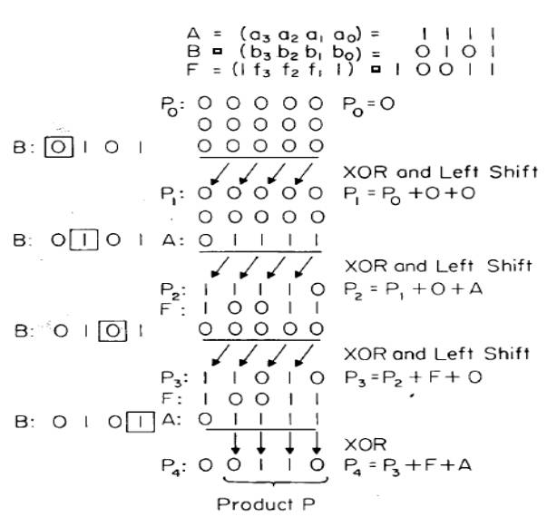

EEE6225 Systems Design
| Tutorial 3: Designing a GF(24) Multiplier | ||
In this tutorial, you will design and test a GF(24) multiplier. An algorithm for the multiplication process is shown -below, but is generalised to GF(2m), where m is any integer number. We need to compute : |
||
P(x) = A(x).B(x) mod F(x) |
||
where the irreducible polynomial over GF(2) is |
||
F(x) = xm + fm-1xm-1 + fm-2xm-2 + …. + f1x + f0 |
||
A(x), B(x) and P(x) are elements of the field GF(2m). |
||
A(x) = am-1xm-1
+ am-2xm-2
+ …. + a1x + a0 |
||
and ai, bi, pi and fi are binary, where i = 0 …. m-1 We can write P(x) as: |
||
| P(x) | = A(x) { bm-1xm-1
+ bm-2xm-2 + …. + b1x + b0}
mod F(x) = { A(x) bm-1xm-1 mod F(x) + A(x) bm-2xm-2 mod F(x) + …. + A(x) b0 mod F(x) }mod F(x) |
|
Starting with the first term , let |
||
| K1(x) | = A(x) bm-1xm-1
mod F(x) = { A(x) bm-1 mod F(x).x } xm-2 mod F(x) = P1(x) xm-2 mod F(x) |
|
| where P1(x) =
A(x) bm-1 mod F(x).x |
||
| K2(x) | = K1(x) +
A(x) bm-2xm-2 mod F(x) = { P1(x) + A(x) bm-2 } xm-2 mod F(x) = { [P1(x) + A(x) bm-2 ] mod F(x).x}.xm-3 mod F(x) = P2(x) . xm-3 mod F(x) |
|
| |
|
. . . . . |
| where P2(x) =
[P1(x) + A(x) bm-2 ] mod F(x).x. |
||
| Km-1(x) | = Km-2(x)
+ A(x) b1.x mod F(x) = { Pm-2(x) + A(x) b1 }x mod F(x) = { [Pm-2(x) + A(x) b1] mod F(x).x}mod F(x) = Pm-1(x) mod F(x) |
|
| where Pm-1(x)
= [Pm-2(x) + A(x) b1 ] mod F(x).x. Hence, |
||
| Km(x) | = Km-1(x) +
A(x) b0 mod F(x) = { Pm-1(x) + A(x) b0 }mod F(x) = Pm(x) mod F(x) = the final product P(x). |
|
| From the equations
above, it can be seen that a multiplication operation can be broken
down into m shift and add operations. |
||
| Multiplication Algorithm | ||
P(x) = zero |
||
|
 Figure 3 : GF(24)
Multiplication |
||
| The cascaded Bit Slice shown in Figure 2 can be used to implement the GF(24) multiplier. In fact, you can stack 4 of them one on top of one another with suitable interconnections to implement the GF(24) multiplier or just use one to compute the product iteratively by feeding the partial product back into the cascaded Bit Slice. | ||
| Exercise | ||